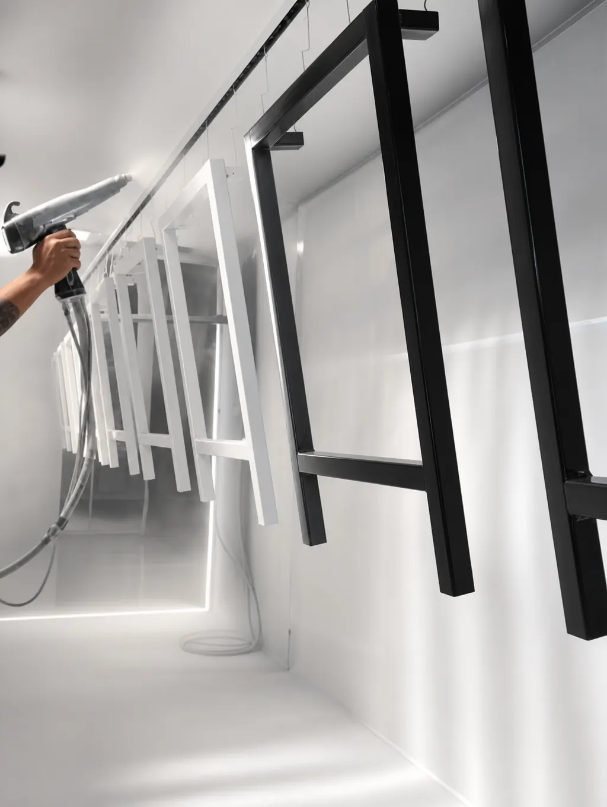

La pintura en polvo para metal es el recubrimiento industrial más usado para piezas de acero, hierro, aluminio y otros metales: se aplica con carga electrostática y se hornea hasta formar una película dura, uniforme y resistente. La pregunta de fondo no es si funciona en tu metal, sino qué polvo y qué preparación necesita cada metal según dónde va a trabajar la pieza.
La respuesta corta: la resina depende del uso (poliéster para exterior, epóxica o híbrida para interior) y la preparación depende del metal. Esto es lo principal que debes tomar en cuenta con cada uno:
- Acero y hierro: aceptan todas las resinas; la limpieza de aceite y óxido define la adhesión
- Aluminio: no se oxida como el acero, pero necesita un pretratamiento propio para que el polvo adhiera
- Galvanizado: se puede pintar (sistema dúplex); hay que cuidar los gases del zinc que causan burbujas
- Acero inoxidable: su superficie lisa adhiere poco y pide una preparación pensada para él
Esta guía está pensada para piezas industriales y de manufactura: lotes, componentes y estructuras que se procesan en línea. La pintura doméstica de brocha o aerosol es otro caso, con otros productos y otras expectativas de durabilidad.
En Steel Paint somos maquiladores de pintura en polvo: no fabricamos la pintura, aplicamos el polvo que corresponde a tu especificación. Si apenas conoces el proceso, empieza por qué es la pintura electrostática y cómo funciona.
Pintura en polvo para metal: por qué funciona en casi todos los metales
El polvo se carga eléctricamente y la pieza, conectada a tierra, lo atrae y lo retiene. Después, el horno lo funde y lo cura. Por eso la pintura electrostática para metal (o "electrostatica", como también se busca) necesita tres cosas de la pieza:
- Que conduzca electricidad: los metales lo hacen por naturaleza, y eso permite que el polvo se adhiera parejo, incluso en esquinas y bordes
- Que aguante el horneado: el metal casi nunca es el problema; lo son los plásticos, hules, empaques o adhesivos que la pieza lleve integrados
- Que esté limpia: aceites, óxido y residuos impiden la adhesión sin importar qué metal sea
A diferencia de la pintura líquida, el polvo no lleva solventes y se cura en horno. Para comparar ambas tecnologías, revisa pintura en polvo vs pintura líquida.
Pintura en polvo según el tipo de metal
En Steel Paint procesamos piezas ferrosas y no ferrosas. Esto es lo que conviene saber de cada metal, con criterios generales de la industria:
Acero y hierro
Es el caso más común: estructuras, soportes, gabinetes, herrería y autopartes. Su principal enemigo es la corrosión, que aparece rápido si la preparación de superficie falla.
Por eso pesan tanto la limpieza del aceite, la cascarilla y el óxido. Lo explicamos en preparación de superficie para powder coating.
Aluminio
Su capa natural de óxido pide un pretratamiento específico para que el polvo adhiera bien. Es muy común en perfiles, carcasas y arquitectura.
Acero galvanizado
El galvanizado ya trae una capa de zinc, y pintarlo encima (sistema dúplex) mejora el aspecto y alarga la protección. El riesgo es que esa capa libere gases durante el horneado y deje burbujas o poros, así que el proceso debe adaptarse. Para decidir entre uno y otro, revisa la comparativa entre recubrimiento en polvo y galvanizado.
Acero inoxidable
Ya resiste la corrosión, así que se pinta casi siempre por color, identidad o aspecto. Su superficie lisa y pasiva dificulta la adhesión: suele necesitar un perfil de anclaje y una preparación pensada para ese material.
Esta tabla resume lo anterior. Es orientativa y no sustituye la revisión de tu pieza:
| Metal | Qué pide | Cuidado principal |
|---|---|---|
| Acero y hierro | Quitar aceite y óxido | Corrosión si falla la limpieza |
| Aluminio | Pretratamiento específico | Adhesión sin pretratamiento |
| Galvanizado | Preparar la capa de zinc | Burbujas por gases al curar |
| Inoxidable | Perfil de anclaje | Superficie lisa, adhiere menos |
Si tu pieza combina metales o lleva soldaduras y fundición, mándanos fotos o planos antes de cotizar y te decimos qué revisar.
Pintura para metal exterior: qué considerar
En intemperie el reto no es el metal, sino el sol, la humedad y los cambios de temperatura. En Monterrey, con alta radiación solar durante buena parte del año, la resina pesa más que en una pieza de interior.
El punto de partida es un poliéster formulado para exterior. Si el sol es intenso o el proyecto exige conservar el color, se sube a un poliéster de alta durabilidad o a un poliuretano. Las resinas epóxicas pierden brillo y color con el sol, así que no se recomiendan como acabado a la intemperie.
La preparación pesa tanto como la resina: la humedad aprovecha cualquier punto sin adhesión. El color también cuenta, porque los tonos oscuros absorben más calor que los claros o medios; lo vemos en la guía de pintura electrostática para muebles metálicos de exterior.
Para comparar resinas se usan ensayos normalizados como ASTM G154 (exposición UV) y ASTM B117 (niebla salina). Pide los resultados en la ficha técnica del polvo que se vaya a usar.
Cómo elegir qué pintura usar para metal según el uso final
Con el metal identificado, el uso decide la resina: híbrida o poliéster en interior, poliéster en exterior, epóxica si hay contacto con aceites o químicos y poliuretano si hay desgaste o abrasión. El detalle de cada una, con su tabla comparativa, está en la guía de tipos de pintura en polvo: epóxica, poliéster e híbrida.
El color y el brillo se definen aparte: revisa los colores de pintura electrostática y la carta RAL y los acabados mate, satinado, brillante y texturizado.
En la práctica, en Monterrey y el noreste vemos tres escenarios. En autopartes y metalmecánica predomina el acero (soportes, estructuras, maquinaria), donde pesan la uniformidad entre lotes y la resistencia al desgaste; lo desarrollamos en la guía de la industria automotriz de Monterrey.
En mueble metálico, HVAC y refrigeración se mezclan acero y aluminio en gabinetes y carcasas, donde el aspecto es parte del producto. Y en construcción y arquitectura metálica aparecen perfiles de aluminio, estructuras de acero y piezas galvanizadas a la intemperie, donde la preparación y la resina de exterior son las decisiones críticas.
Errores comunes al elegir pintura para metal
Estos son los que más retrabajos provocan, según el conocimiento general de la industria:
- Elegir solo por el color: el color no define la resistencia; la resina y la preparación sí
- Usar epóxica a la intemperie: se calea y pierde color con el sol, sobre todo en tonos claros
- Tratar todos los metales igual: aluminio, galvanizado e inoxidable piden una preparación distinta a la del acero
- Recortar la preparación: es una de las causas más comunes de fallas de adhesión, ampollas y corrosión bajo la película
- No avisar de lo que no aguanta el horno: plásticos, hules o empaques integrados a la pieza se dañan al hornear
Qué debe tener tu pieza antes de pintarse
Muchos problemas de acabado vienen de la pieza que llega, no de la pintura. Antes de enviar tu lote, revisa:
- Residuos de aceite o grasa de maquinado, corte o estampado.
- Óxido y cascarilla de laminación.
- Salpicaduras y escoria de soldadura, que se notan bajo el acabado, sobre todo en brillante.
- Fundición porosa, que puede liberar gases al hornear y dejar burbujas.
- Plásticos, hules, empaques o rodamientos que deban retirarse o protegerse antes del horno.
- Zonas que no deben pintarse, como roscas o contactos eléctricos: conviene indicarlas desde la cotización.
Para profundizar, el Powder Coating Institute, la asociación del sector, publica material técnico sobre pintura en polvo. Si ya estás por cotizar, conviene entender qué factores determinan el costo de la maquila y cómo elegir un maquilador de pintura en polvo en Monterrey.
Preguntas frecuentes sobre la pintura en polvo para metal
¿Qué pintura se usa para metal?
Para piezas industriales, la más usada es la pintura en polvo aplicada con proceso electrostático y horneada. La resina se elige según el uso: poliéster para exterior, epóxica o híbrida para interior, y epóxica cuando hay contacto con aceites o químicos.
¿Se puede usar pintura electrostática en cualquier metal?
En casi cualquier metal que conduzca la electricidad y aguante el horneado: acero, hierro, aluminio y, con preparación específica, galvanizado e inoxidable. Lo que no soportan el calor, como plásticos o hules, no se puede hornear junto con la pieza.
¿Qué pintura para metal exterior dura más?
Para intemperie, el punto de partida es un poliéster formulado para exterior, y un poliéster de alta durabilidad o poliuretano si el sol es intenso. La duración también depende de la preparación de la superficie, así que ambas decisiones van juntas.
¿Se puede pintar aluminio o galvanizado con pintura en polvo?
Sí, ambos se pintan con pintura en polvo, pero no como el acero. El aluminio y el galvanizado piden un pretratamiento adecuado a su superficie, y el galvanizado además puede dar burbujas si la capa de zinc libera gases durante el horneado.
¿Qué diferencia hay entre la pintura en polvo y la pintura líquida para metal?
La pintura en polvo no lleva solventes y se cura en horno, formando una película más dura y uniforme. La líquida se aplica húmeda y seca por evaporación, lo que la hace útil para piezas que no pueden hornearse o para retoques.
Primero el metal, luego la resina
Al elegir pintura para metal, el orden importa: primero el metal, que define la preparación, y después el uso, que define la resina. Resolver esas dos decisiones desde la cotización evita retrabajos y es lo que más pesa en la duración del acabado.